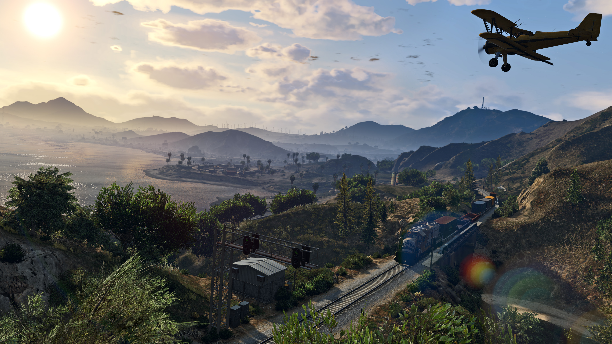

GTA, tudo o que você precisa saber antes de jogar!
E aí, pessoal! Se você está antenado no universo dos videogames, é praticamente impossível não ter ouvido falar do lendário e icônico Grand Theft Auto, carinhosamente conhecido como GTA, não é mesmo? Mas se por acaso você ainda não está familiarizado com toda essa febre que envolve esse título, não se preocupe, pois estamos aqui para te deixar por dentro de todos os detalhes!
Grand Theft Auto, ou simplesmente GTA, é uma série de jogos eletrônicos desenvolvida pela renomada produtora Rockstar Games, que se tornou uma verdadeira sensação no mundo dos videogames desde o seu lançamento inicial. Com sua abordagem revolucionária e inovadora, o GTA conseguiu conquistar milhões de fãs ao redor do mundo, graças à sua jogabilidade envolvente, enredos cativantes e uma liberdade sem precedentes dentro do jogo.
Em cada título da série, os jogadores são imersos em vastos e vibrantes mundos abertos, onde têm a liberdade de explorar, interagir com personagens variados e, é claro, embarcar em uma infinidade de missões emocionantes e desafiadoras. Desde as ruas movimentadas de Liberty City até as paisagens ensolaradas de Los Santos, os cenários oferecidos pela série GTA são verdadeiros playgrounds virtuais, prontos para serem explorados e vivenciados pelos jogadores.
Além disso, a franquia GTA é conhecida por sua narrativa rica e multifacetada, que muitas vezes aborda temas controversos e satiriza aspectos da cultura contemporânea. Com personagens memoráveis, diálogos afiados e reviravoltas inesperadas, os jogadores são levados a uma jornada emocionante e repleta de adrenalina, repleta de momentos épicos e inesquecíveis.
Em resumo, Grand Theft Auto transcendeu o status de mero jogo eletrônico para se tornar um verdadeiro fenômeno cultural, influenciando não apenas a indústria de videogames, mas também a cultura popular como um todo. Então, se você ainda não teve a oportunidade de experimentar essa incrível saga, não perca mais tempo e embarque nessa aventura épica que é o universo de GTA!
O que é GTA?
O Grand Theft Auto é, sem dúvida, o líder incontestável dos jogos de mundo aberto. É como ter um playground virtual à sua disposição, onde as possibilidades são praticamente infinitas e a liberdade é total. Desde simplesmente dar um passeio de carro pelas movimentadas ruas da cidade até planejar e executar um audacioso assalto a um banco, o GTA é o lugar onde sua imaginação ganha vida no mundo digital.
Em meio a esse vasto cenário interativo, os jogadores têm a oportunidade de mergulhar em uma experiência única, onde cada esquina, cada interação e cada decisão moldam o curso da sua própria aventura. Seja explorando os detalhes meticulosamente criados do ambiente urbano ou participando de atividades aparentemente infinitas, como corridas de rua, desafios de tiroteio ou até mesmo momentos de relaxamento na beira da praia, o GTA oferece uma gama diversificada de experiências para satisfazer todos os tipos de jogadores.
Além disso, o GTA não se limita apenas à ação desenfreada e à liberdade de exploração. Através de seus enredos envolventes e personagens memoráveis, o jogo também oferece uma narrativa rica e imersiva, repleta de reviravoltas emocionantes e dilemas morais complexos. Os jogadores são levados a um mundo onde as linhas entre o certo e o errado muitas vezes se tornam borradas, e as consequências de suas escolhas podem ter um impacto duradouro no desenrolar da história.
Em suma, o Grand Theft Auto não é apenas um jogo, mas sim uma experiência de imersão total em um universo virtual vibrante e dinâmico. É um lugar onde a sua criatividade não tem limites e onde cada momento é uma oportunidade para criar memórias inesquecíveis. Então, se você ainda não teve a chance de explorar as maravilhas deste mundo virtual, prepare-se para uma jornada épica que promete surpreender, desafiar e cativar a sua imaginação como nunca antes!

O por que da fama do GTA
E por que diabos o GTA tem essa fama toda? Bem, é simplesmente porque ele é diferente de tudo o que você já jogou. Com gráficos que beiram o realismo, uma trilha sonora envolvente que faz a sua adrenalina pulsar e uma narrativa repleta de reviravoltas que mantém você na ponta da cadeira, o GTA conquistou os corações (e as horas de lazer) de milhões de gamers pelo mundo. Desde o momento em que você entra neste mundo virtual, é transportado para uma realidade paralela onde cada esquina esconde segredos, cada personagem tem sua própria história e cada decisão que você toma molda o destino do jogo.
Abaixo, apresentamos uma tabela que ilustra a evolução impressionante das vendas do GTA V até janeiro de 2022, demonstrando o impacto duradouro e o imenso sucesso comercial que essa franquia icônica alcançou ao longo dos anos.
| Ano | Vendas(em milhões de cópias) |
|---|---|
| 2013(lançamento) | Mais de 10 milhões |
| 2014 | Mais de 15 milhões |
| 2015 | Mais de 20 milhões |
| 2016 | Mais de 25 milhões |
| 2017 | Mais de 30 milhões |
| 2018 | Mais de 110 milhões |
| 2019 | Mais de 115 milhões |
| 2020 | Mais de 140 milhões |
| Até janeiro de 2022 | Mais de 150 milhões |
| Dados atualizados até janeiro de 2022 | |
Mas olha só, não é só pela ação e pelas missões malucas que o GTA ganhou o coração da galera. É também pela liberdade incrível que o jogo te proporciona. Você pode ser o bonzinho, ajudando a galera e seguindo as leis, ou pode ser o vilão, causando o caos e a destruição por onde passa. A escolha é sua! Essa liberdade de escolha é o que torna o GTA tão cativante e imersivo. Em um mundo onde as consequências das suas ações são reais, cada decisão que você toma molda o rumo da sua jornada e define o tipo de experiência que você vai ter.
Por que a espera do GTA VI?
Agora, se tem uma coisa que deixa a galera na ponta da cadeira é a espera pelo próximo lançamento. E isso nos traz ao tão aguardado GTA VI. Desde que o último jogo da série foi lançado, a comunidade gamer está na expectativa, especulando o que a Rockstar Games, a mente brilhante por trás do GTA, está preparando para nós. Cada pequena pista, cada rumor ou vazamento é motivo de intensa discussão e antecipação entre os fãs, que mal podem esperar para mergulhar em um novo mundo virtual repleto de possibilidades e aventuras.
A gente tá falando de anos de espera, mas a paciência vai valer a pena, porque a cada novo título, o GTA só fica mais insano. Mal podemos esperar pra descobrir quais surpresas estão guardadas no GTA VI!
Fica ligado aqui no blog porque a gente vai te manter atualizado com todos os vazamentos e rumores quentes sobre o GTA VI. A adrenalina tá só começando, meu parceiro!